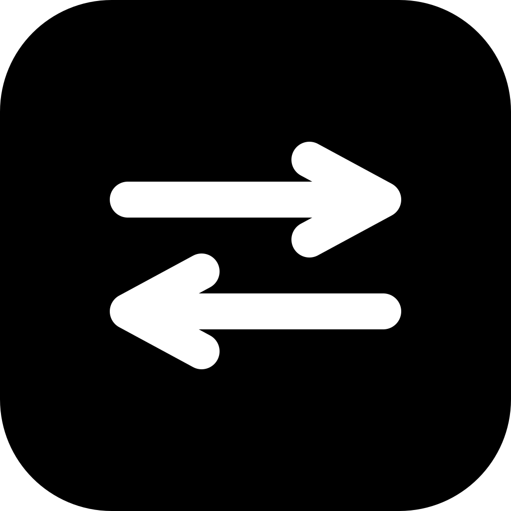

This tab
Screenshot pending…
Best on AI chat sites: highlight a prompt → Hand off. Captured page text is untrusted. TabHandoff will not pretend AI ran when it did not.
Saved tasks
No saved AI tasks yet on this computer.

Hand off coding / AI-chat work — not a Transfer app.
Screenshot pending…
Best on AI chat sites: highlight a prompt → Hand off. Captured page text is untrusted. TabHandoff will not pretend AI ran when it did not.
No saved AI tasks yet on this computer.